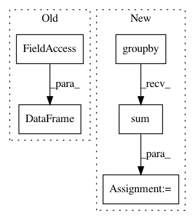

134db0b8216e32dd6d91a57f7d18409a6028720f,linearmodels/tests/panel/test_between_ols.py,,test_missing_weighted,#Any#,106
Before Change
wexog = wexog / weights
dep = wdep
exog = pd.DataFrame(wexog, columns=mod.exog.vars)
ols = IV2SLS(dep, exog, None, None, weights=weights)
ols_res = ols.fit("unadjusted")
assert_results_equal(res, ols_res)
After Change
mod = BetweenOLS(missing_data.y, missing_data.x, weights=missing_data.w)
res = mod.fit(reweight=True)
weights = mod.weights.dataframe.groupby(level=0).sum()
weights = weights.reindex(mod.dependent.entities)
dep = mod.dependent.dataframe * mod.weights.dataframe.values
dep = dep.groupby(level=0).sum()
dep = dep.reindex(mod.dependent.entities)
dep = dep / weights.values
exog = mod.weights.dataframe.values * mod.exog.dataframe
exog = exog.groupby(level=0).sum()
exog = exog.reindex(mod.dependent.entities)
exog = (1.0 / weights.values) * exog
ols = IV2SLS(dep, exog, None, None, weights=weights)
ols_res = ols.fit("unadjusted")
assert_results_equal(res, ols_res)
In pattern: SUPERPATTERN
Frequency: 3
Non-data size: 5
Instances
Project Name: bashtage/linearmodels
Commit Name: 134db0b8216e32dd6d91a57f7d18409a6028720f
Time: 2017-04-04
Author: kevin.k.sheppard@gmail.com
File Name: linearmodels/tests/panel/test_between_ols.py
Class Name:
Method Name: test_missing_weighted
Project Name: bashtage/linearmodels
Commit Name: 134db0b8216e32dd6d91a57f7d18409a6028720f
Time: 2017-04-04
Author: kevin.k.sheppard@gmail.com
File Name: linearmodels/tests/panel/test_between_ols.py
Class Name:
Method Name: test_missing
Project Name: bashtage/linearmodels
Commit Name: f49809322491c857d435bb12f5de7b09aac2d181
Time: 2017-04-14
Author: kevin.k.sheppard@gmail.com
File Name: linearmodels/panel/data.py
Class Name: PanelData
Method Name: mean